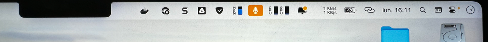

Cacher le notch des MacBook Pro pour voir toutes ses icônes dans la barre des menus
Cacher le notch des MacBook Pro pour voir toutes ses icônes dans la barre des menus
J’ai un problème qui m’embête depuis un bon moment sur mon MacBook Pro : le fait que mes icônes de la barre de menu soient cachées derrière le notch.
Je suis un utilisateur de iStat Menus qui me permet d’afficher des informations supplémentaires dans ma barre de menu. C’est une application très pratique, mais avec toutes les autres applications que j’utilise qui ajoutent des icônes dans la barre des menus, je me retrouve à en avoir trop, et elles se retrouvent cachées derrière le « notch », cet espace noir au milieu de la barre de menu qui cache la caméra.
Je me retrouve à devoir déplacer des icônes dans cet espace noir jusqu’à trouver celle qui m’intéresse.

Aujourd’hui, j’en ai eu marre !
 Créer un compte OpenAI et obtenir sa clé
Créer un compte OpenAI et obtenir sa clé